03.08.24
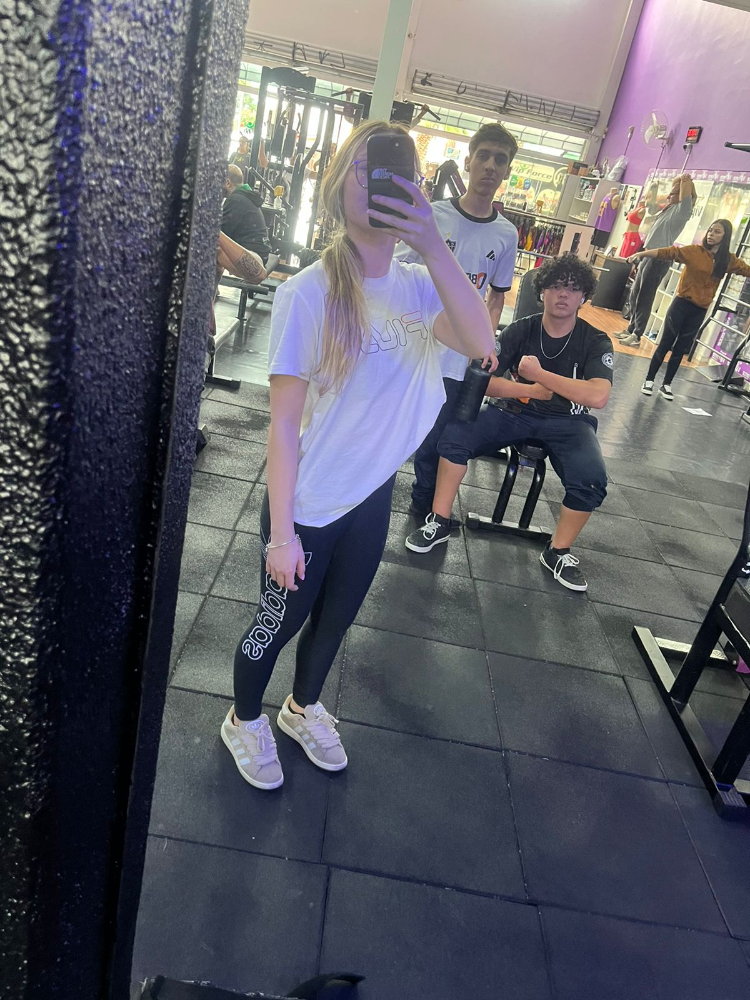Olha meu amor, eu, você e o Vini na academia.
08.08.24
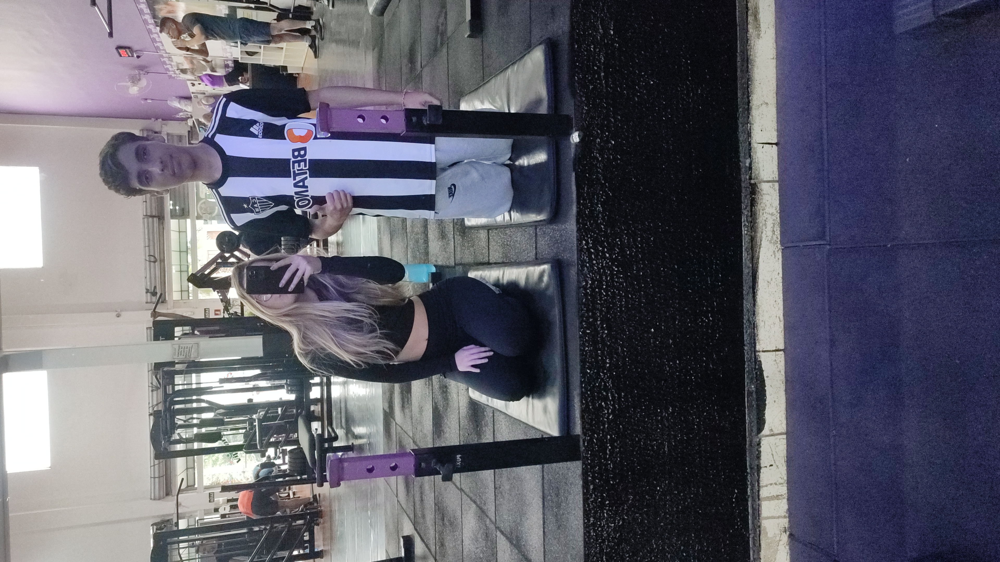Mais uma vez a gente na academia. Eu tenho muito a agradecer à academia, pois acredito que, sem ela, a nossa história seria totalmente diferente.
Neném mais lindo desse mundo
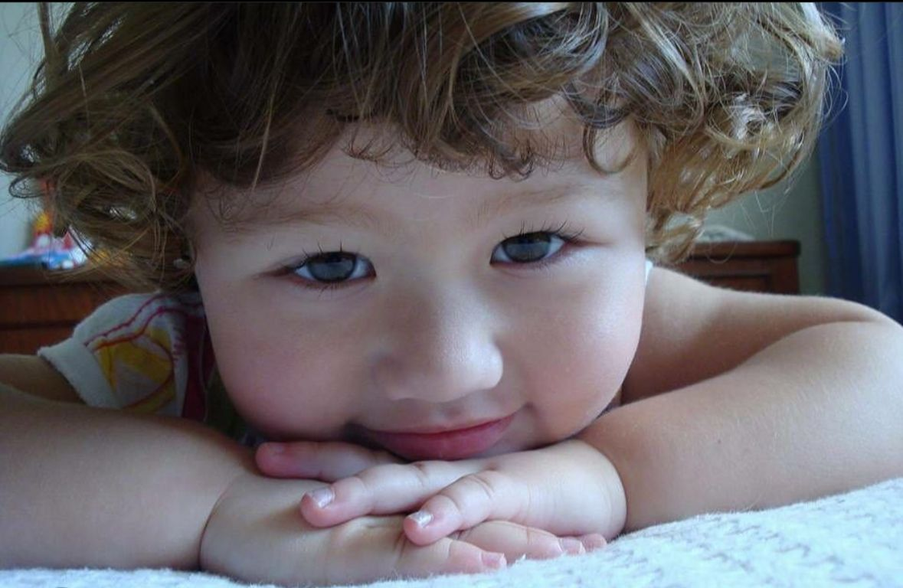AAAI MEU AMOR
Olha que linda essa neném, eu amo tanto essa fotinha sua que você nem imagina, sempre que vejo ela fico querendo morder essa bochechinha linda.
(por favor, mande mais fotos suas neném♥)
Apresentação
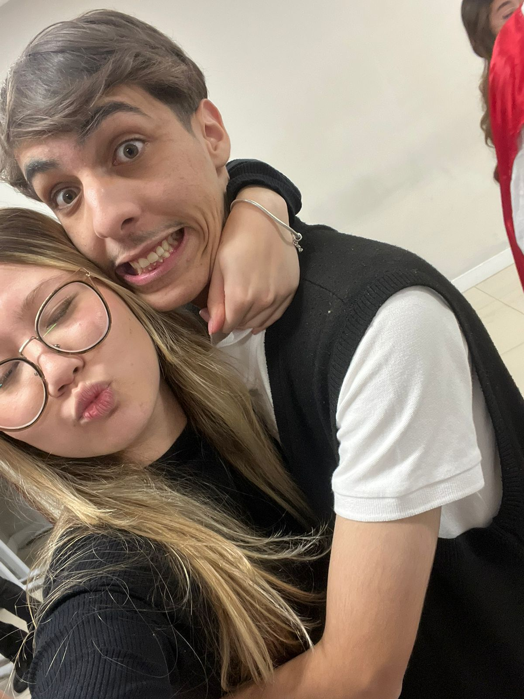Amor, esse dia foi picoso, foi o dia da minha apresentação na escola.
Amor do céu, não sei se você viu, mas nesse dia, a minha maquiadora era uma princesa MUITO linda, me apaixonei.
Primeiro dia na Chácara
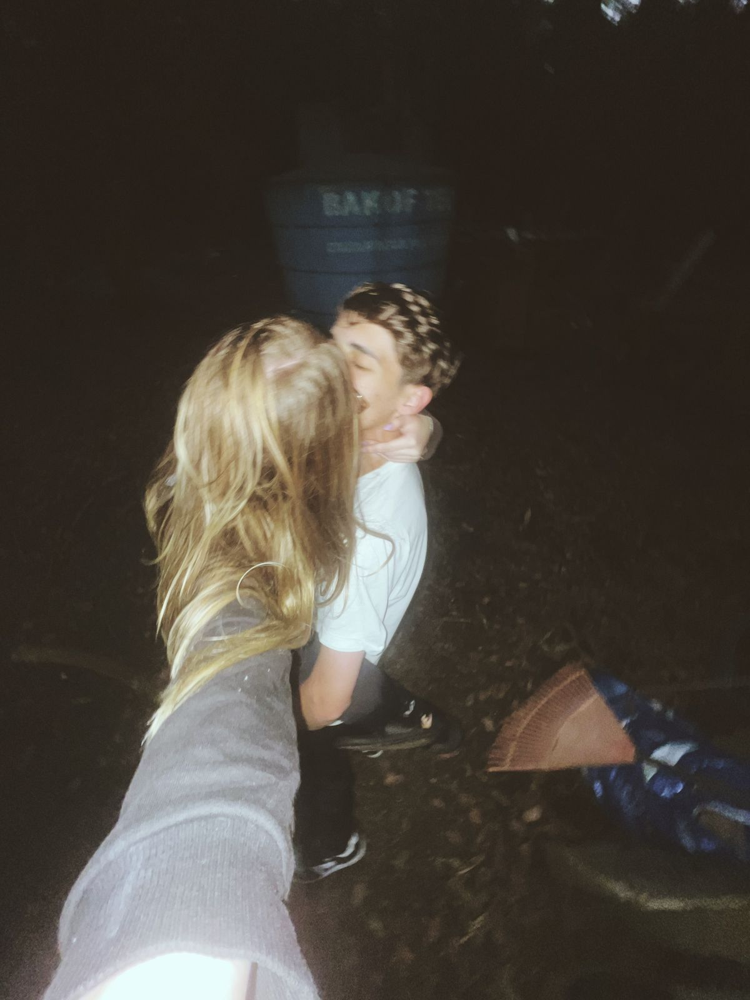Olha só meu amor, esse dia a gente se divertiu, até atiramos com uma arma de chumbinho e ainda o Pedro gravou a gente testando um novo tipo de beijo, aiai.
Indo embora da Chácara
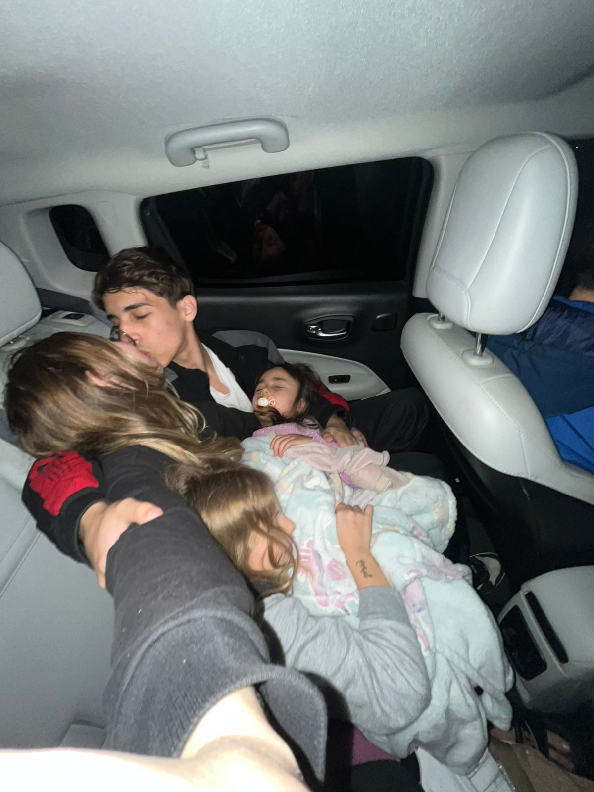Ai, minha vida, esse dia foi muito especial, amo ter você no meu colo quando estamos em algum carro, sinto que você está mais segura.
Primeiro selinho
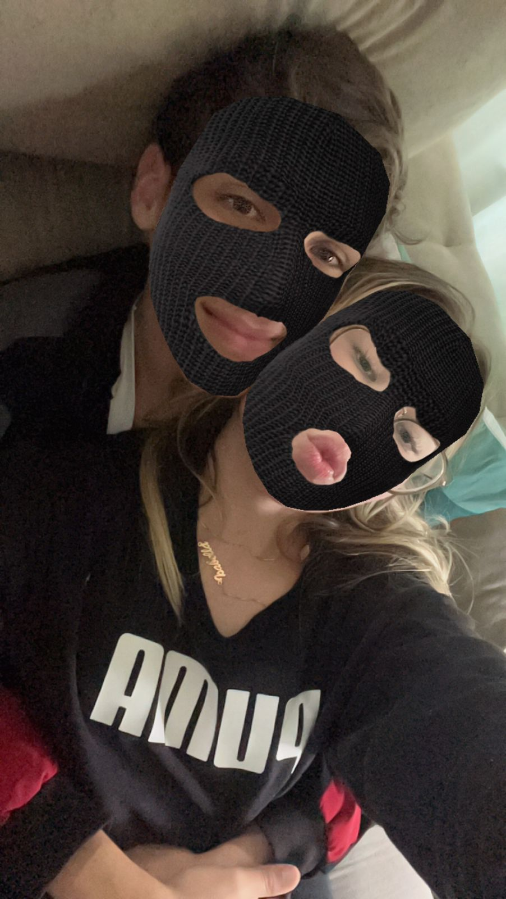Amor, se eu não me engano, esse foi o dia do nosso primeiro selinho e essa foto foi tirada na casa da Amanda antes de irmos para a escola.
Não gosto muito desse dia, mas ele não deixa de ser um dia especial.
Johnny Rockets

Olha amor, esse foi o dia que comemos no Johnny Rockets, estava muito gostoso o hambúrguer.
Festa De Casamento
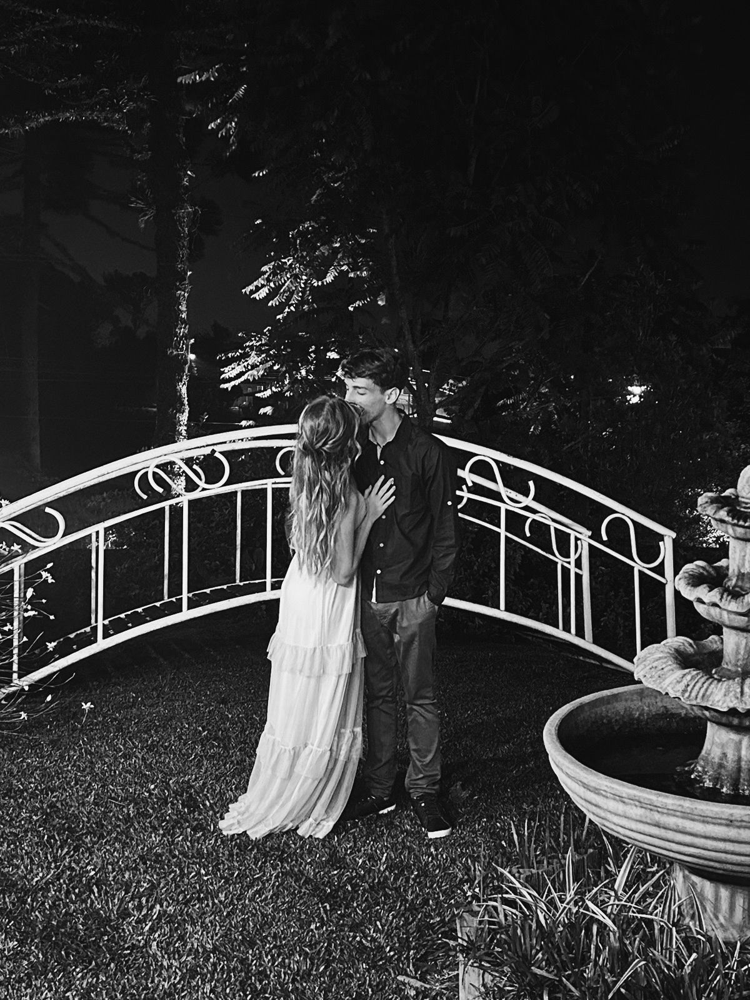Nesse dia fomos para o casamento da Thayslaine.
Esse dia foi muito dahora também, dançamos juntos, nos divertimos e será inesquecível.
Mais neném
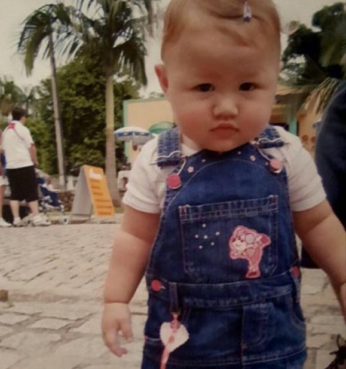Ai meu amor, mais uma foto sua Neném♥
Pedido de Namoro
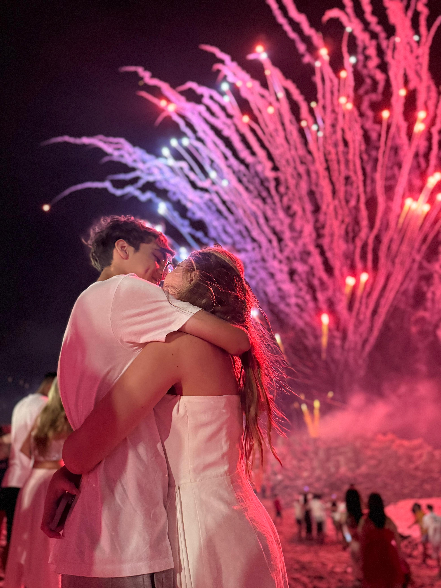 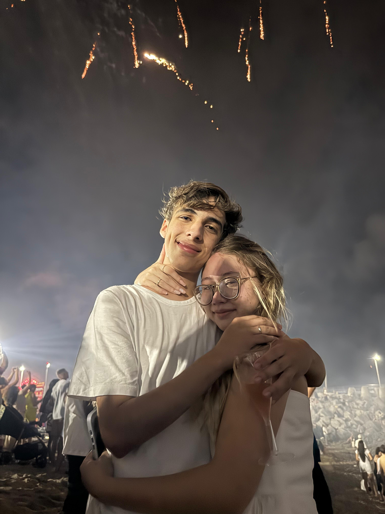 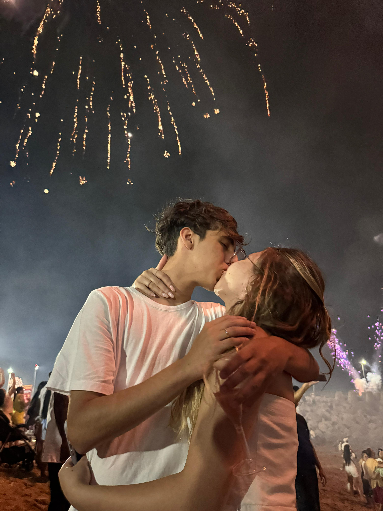Meu amor, finalmente chegamos na parte do dia que viramos oficialmente Namorados.
De longe, o dia mais especial da minha vida, o dia que ouvi um "sim" quando te perguntei se queria namorar comigo, eu estava muito nervoso, com medo de algo dar errado e não sair do jeito que sonhei.
Esse dia foi incrível e vou lembrar dele até o meu último suspiro.
Meu amor Espero que tenha gostado do presente, sei que nao é muito, mas fiz do fundo do meu coração, desejo que os próximos dias, meses e anos de nossas vidas sejam cheio de alegria e amor.
EU TE AMO MEU AMOR
Ja se passaram dias desde o melhor dia da minha vida 01.01.25